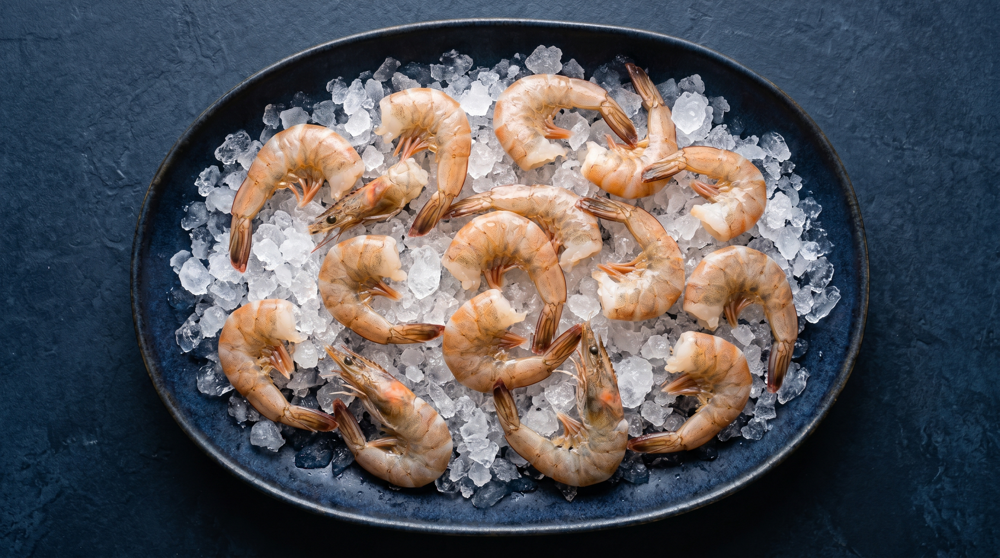
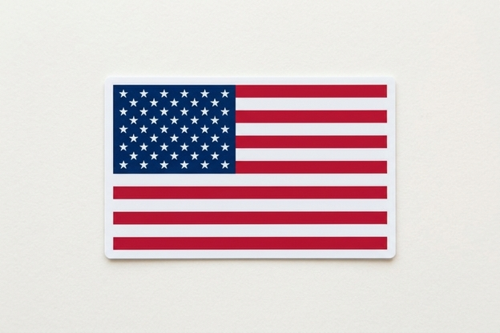
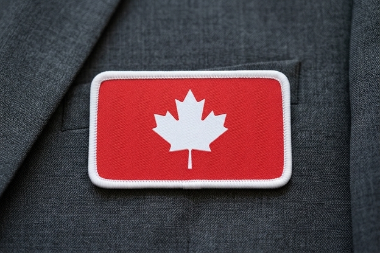

Directorio Comercial — Shrimp Buyers USA & Canada
Compradores y Plantas
Procesadoras de Camaron
Directorio actualizado de las principales empresas compradoras, importadoras y plantas procesadoras de camaron en Estados Unidos y Canada, con contactos de compras y procurement.
10Empresas Listadas
$6.6BImportacion USA 2024
#1Seafood mas consumido USA
606KToneladas importadas/ano
Estados Unidos — Compradores Principales
Top Importadores & Procesadores de Camaron en USA
EE.UU. importa mas de 606,000 toneladas metricas de camaron al ano, con un valor aproximado de $6.6 mil millones USD en 2024. El camaron es el producto de mar mas consumido en el pais (38% del consumo total de seafood). Las empresas a continuacion son los compradores mas activos por volumen de importacion.

ESTADOS UNIDOS — Plantas Procesadoras & Compradores Mayoristas
1
AZ Gems Inc.
Mayor importador de vannamei en USA por volumen de envios — Redlands, CA
21% del mercado — 5,910 envios
AZ Gems es el importador numero 1 de camaron vannamei en Estados Unidos por volumen de envios segun datos de importacion 2024. Fundada en 2012, es un productor-exportador-importador verticalmente integrado especializado en camaron premium y seafood congelado.
El 100% de su camaron importado es certificado BAP o ASC. Trabaja con granjas propias y asociadas en America Latina y Asia. Compra camaron en diversas tallas (16/20, 21/25, 26/30, 31/40, 41/50) en diferentes presentaciones: HLSO, PD, PUD, EZP y cooked.
2
Chicken of the Sea Frozen Foods (COSFF)
Division frozen de Thai Union — 2do comprador por envios — San Diego, CA
17% mercado — 4,919 envios
Chicken of the Sea Frozen Foods es la division de seafood congelado de Thai Union Group (empresa tailandesa con $4B+ en ventas), y el segundo importador de camaron en USA por numero de envios. Importa camaron para retail, club stores (Costco, Sam's Club), foodservice y canal institucional.
Compra camaron de multiples origenes: Ecuador, India, Vietnam, Indonesia. Sus productos van desde camaron raw sin procesar hasta value-added (empanizado, mariposa, cocktail, ring). Tienen un portal B2B dedicado para proveedores de seafood.
3
Aqua Star (USA) Corp.
3er importador por volumen — Proveedor nacional de seafood — Seattle, WA
17% mercado — 4,665 envios
Aqua Star es uno de los principales proveedores de seafood congelado en Norteamerica. Distribuye a retailers, restaurantes y operadores de foodservice en todo EE.UU. Su division de camaron es una de las mas activas del mercado americano, con compras provenientes principalmente de Ecuador, India, y paises asiaticos.
Ofrece una linea completa de camaron congelado incluyendo white vannamei, black tiger, wild-caught del Golfo, y value-added. Su bodega principal esta en Seattle, WA con operaciones en multiples estados.
ESTADOS UNIDOS — Continuacion
4
Red Chamber Co.
Mayor supplier privado de seafood en USA — Forbes #272 — Vernon, CA
~$2B Revenue — 1,700 empleados
Red Chamber es el mayor proveedor privado de seafood de EE.UU., con operaciones desde 1973. Esta en la lista Forbes de las 272 empresas privadas mas grandes de America. Compra camaron de multiples origenes globalmente y lo procesa en sus plantas bicoastales, con capacidad de cold storage de mas de 60 millones de libras.
Tiene acuerdos de suministro con grandes cadenas como Red Lobster (saldo de $7.6M en 2024). Su departamento de compras es activo en la adquisicion de camaron entero, pelado y cooked en diferentes calibres para su red de distribucion nacional.
5
Mazzetta Company, LLC
Importador premium de seafood y camaron — Highland Park, IL
Importador & Procesador Premium
Mazzetta es uno de los mayores importadores y procesadores de camaron, mejillones, langosta y cangrejo en EE.UU. Su sede en Illinois les da acceso logistico al Medio Oeste americano. Tienen una reputacion solida en el mercado de foodservice premium y retail de alto valor.
Compran camaron de varios paises incluyendo Ecuador, Argentina (camaron patagonico), India y Vietnam. Su portal de contacto para ventas tiene formulario especifico para proveedores. Son activos en ferias como Seafood Expo North America.
6
Beaver Street Fisheries (BSF)
Lider sureste USA — +70 anos en el mercado — Jacksonville, FL
~$206M Revenue — Red Global Camaron
BSF es el importador, fabricante y distribuidor de seafood congelado mas importante del sureste de EE.UU. Su marca retail Sea Best esta en Publix, Walmart, Costco y Winn-Dixie. Mantienen una red global de proveedores de camaron que garantiza disponibilidad todo el ano.
Anuncio una alianza con Dot Foods (julio 2025) para expandir su red de distribucion. Compran camaron de America Latina, Asia y el Golfo de Mexico. Sus plantas estan certificadas bajo GFSI y BAP.
ESTADOS UNIDOS — Continuacion
7
Netuno USA
Importador mayorista — 400+ distribuidores — Doral / Fort Lauderdale, FL
Importador + Distribuidor 4 Continentes
Netuno USA es un distribuidor e importador mayorista de seafood que abastece a mas de 400 distribuidores en EE.UU. y opera en cuatro continentes. Con base en Florida, tiene acceso directo al mercado hispano-latino y a los principales puertos de entrada del sur del pais.
Compran y distribuyen camaron, tilapia y otros productos de seafood para el canal foodservice y distribucion mayorista. Es una empresa de capital brasileno con fuerte presencia en Miami/Doral, el hub de importacion de seafood mas importante del sur de EE.UU.
8
Pacific Seafood Group
Distribuidor familiar — 41 plantas en 11 estados — Clackamas, OR
~$1.5B Revenue — 3,000+ empleados
Pacific Seafood es uno de los distribuidores mayoristas mas grandes del Pacifico americano. Aunque su enfoque principal es el pescado de la costa oeste, tienen una linea activa de camaron rosa del Pacifico (coldwater pink shrimp) y camaron importado para su canal de foodservice y retail.
Recibio un contrato USDA para camaron ensalada (salad shrimp) en julio 2025. Con distribucion propia terrestre y aerea en 11 estados, es un comprador relevante para productores que quieran entrar al mercado del Pacifico americano.

CANADA — Compradores y Plantas Procesadoras de Camaron
9
Clearwater Seafoods Inc.
Lider en camaron de agua fria — Bedford, Nova Scotia, Canada
Productor + Procesador Canada
Clearwater es el proveedor de seafood premium mas importante de Canada, especializado en camaron de agua fria (coldwater shrimp), langosta, vieiras, almejas y cangrejo de las nieves. Sus productos se exportan a EE.UU., Europa y Asia bajo certificacion eco.
Es un comprador activo de materia prima de camaron para complementar su produccion. Sus productos de camaron wild-caught del Atlantico Norte son altamente valorados en el mercado premium americano y canadiense.
CANADA — Continuacion
10
High Liner Foods Inc.
Procesador lider de seafood congelado Norteamerica — Lunenburg, NS
~$1.09B Revenue — Nasdaq: HLNFF
High Liner Foods es el procesador y comercializador de seafood congelado mas importante de Canada, con ventas en USA, Canada y Mexico. Su marca Mirabel es la referencia de camaron premium en Canada (Black Tiger y White Shrimp).
Como empresa publica con equipos de procurement internacional, compra camaron de multiples origenes para su linea de value-added (empanizado, relleno, etc.) y camaron puro IQF para retail y foodservice. Tienen un equipo de compras activo para sourcing global.
Resumen de Contactos
Directorio Rapido — Todos los Contactos
| # |
Empresa |
Pais |
Telefono |
Email / Web |
Ciudad |
| 1 |
AZ Gems Inc. |
USA |
+1 (909) 798-3607 |
support@azgems.com |
Redlands, CA |
| 2 |
Chicken of the Sea FF |
USA |
(858) 597-4100 |
b2b.chickenofthesea.com |
San Diego, CA |
| 3 |
Aqua Star USA Corp. |
USA |
1-800-232-6280 |
aquastar.com/contact-us |
Seattle, WA |
| 4 |
Red Chamber Co. |
USA |
(323) 234-9000 |
info@redchamber.com |
Vernon, CA |
| 5 |
Mazzetta Company |
USA |
(847) 433-1150 |
mazzetta.com/contact-seafood-sales |
Highland Park, IL |
| 6 |
Beaver St. Fisheries |
USA |
(904) 354-8533 |
info@bsfseafood.com |
Jacksonville, FL |
| 7 |
Netuno USA |
USA |
(305) 513-0904 |
netunousa.com/contact-us |
Doral, FL |
| 8 |
Pacific Seafood Group |
USA |
(503) 905-3400 |
pacificseafood.com |
Clackamas, OR |
| 9 |
Clearwater Seafoods |
CAN |
(902) 443-0550 |
cdnsales@clearwater.ca |
Bedford, NS |
| 10 |
High Liner Foods |
CAN |
1-902-634-8811 |
info@highlinerfoods.com |
Lunenburg, NS |
Como contactar el departamento de compras correctamente
Llama al numero general y pide hablar con el Purchasing Manager o Seafood Procurement Department. Para emails, menciona en el asunto: "New Shrimp Supplier — [especie] — [calibres disponibles] — [volumen mensual]". Incluye tu ficha tecnica, certificaciones (BAP, ASC, MSC), y disponibilidad de volumen.
Ferias Clave para Contactar Compradores en Persona
Seafood Expo North America (Boston, marzo) y Seafood Expo Global (Barcelona, abril) son los eventos donde todos estos compradores tienen presencia. El contacto directo en ferias acelera significativamente el proceso de calificacion como proveedor.
Guion de Llamada Sugerido (en ingles)
"Hello, my name is [name] from [company]. We are a shrimp producer / processor located in [country]. We are looking to introduce our product to your procurement team. We offer [species: vannamei / tiger / etc.] in sizes [calibres], with [BAP/ASC] certification, with a capacity of [X] metric tons per month. Could you please connect me with your seafood purchasing manager or let me know the best way to submit a product sample and specification sheet?"
Directorio preparado para empresa de seafood — Abril 2026
Fuentes: USImportData, Volza, ZoomInfo, Company Websites, SeafoodSource — Datos verificados de fuentes publicas